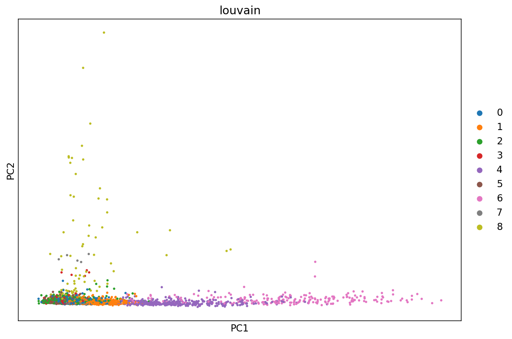

Introduction to single-cell RNA-seq II: getting started with analysis¶
This notebook demonstrates pre-processing and basic analysis of the mouse retinal cells GSE126783 dataset from Koren et al., 2019. Following pre-processing using kallisto and bustools and basic QC, the notebook demonstrates some initial analysis. The approximate running time of the notebook is about 13 minutes.
The notebook was written by Kyung Hoi (Joseph) Min, A. Sina Booeshaghi and Lior Pachter. If you use the methods in this notebook for your analysis please cite the following publications which describe the tools used in the notebook, as well as specific methods they run (these are cited inline in the notebook):
Melsted, P., Booeshaghi, A.S. et al. Modular and efficient pre-processing of single-cell RNA-seq. bioRxiv (2019). doi:10.1101/673285
Wolf, F. A., Angere, P. and Theis, F.J. SCANPY: large-scale single-cell gene expression data analysis. Genome Biology (2018). doi:10.1186/s13059-017-1382-0
An R notebook implementing the same analysis is available here. See the kallistobus.tools tutorials site for additional notebooks demonstrating other analyses.
# These packages are pre-installed on Google Colab, but are included here to facilitate running this notebook locally
!pip install --quiet matplotlib
!pip install --quiet scikit-learn
!pip install --quiet numpy
!pip install --quiet scipy
123
%%time
# `kb` is a wrapper for the kallisto and bustools program, and the kb-python package contains the kallisto and bustools executables.
!pip install --quiet kb-python==0.24.1
Note: We use the -O option for wget to rename the files so they can be easily identified. The notebook requires reads in fastq format; the files can be processed in gzip compressed format.
In this example the reads are downloaded from a Box drive; see the data download notebook for information on where to find publicly available single-cell RNA-seq data.
The following command will generate an RNA count matrix of cells (rows) by genes (columns) in H5AD format, which is a binary format used to store Anndata objects. Notice that this requires providing the index and transcript-to-gene mapping downloaded in the previous step to the -i and -g arguments respectively. Also, since the reads were generated with the 10x Genomics Chromium Single Cell v2 Chemistry, the -x 10xv2 argument is used. To view other supported technologies, run kb --list.
Note: To output a Loom file instead, replace the --h5ad flag with --loom. To obtain the raw matrix output by kb instead of the H5AD or Loom converted files, omit these flags.
1234
%%time
# This step runs `kb` to pseudoalign the reads, and then generate the cells x gene matrix in h5ad format.
!kb count -i index.idx -g t2g.txt -x 10xv2 --h5ad -t 2 \
SRR8599150_S1_L001_R1_001.fastq.gz SRR8599150_S1_L001_R2_001.fastq.gz
[2021-07-07 18:17:35,074] INFO Generating BUS file from
[2021-07-07 18:17:35,074] INFO SRR8599150_S1_L001_R1_001.fastq.gz
[2021-07-07 18:17:35,074] INFO SRR8599150_S1_L001_R2_001.fastq.gz
[2021-07-07 18:19:52,582] INFO Sorting BUS file ./output.bus to tmp/output.s.bus
[2021-07-07 18:19:55,911] INFO Whitelist not provided
[2021-07-07 18:19:55,912] INFO Copying pre-packaged 10XV2 whitelist to .
[2021-07-07 18:19:56,015] INFO Inspecting BUS file tmp/output.s.bus
[2021-07-07 18:19:57,425] INFO Correcting BUS records in tmp/output.s.bus to tmp/output.s.c.bus with whitelist ./10xv2_whitelist.txt
[2021-07-07 18:20:11,880] INFO Sorting BUS file tmp/output.s.c.bus to ./output.unfiltered.bus
[2021-07-07 18:20:14,882] INFO Generating count matrix ./counts_unfiltered/cells_x_genes from BUS file ./output.unfiltered.bus
[2021-07-07 18:20:16,944] INFO Converting matrix ./counts_unfiltered/cells_x_genes.mtx to h5ad ./counts_unfiltered/adata.h5ad
CPU times: user 1.05 s, sys: 159 ms, total: 1.2 s
Wall time: 2min 45s
Loom is a alternative format for storing single-cell count matrices. Output a Loom file with kb by replacing the --h5ad flag with --loom, or obtain the raw matrix output by omitting the flags
1234
%%time
# # This runs `kb` to pseudoalign the reads, and then generate the cells x gene matrix in Loom format.
# !kb count -i index.idx -g t2g.txt -x 10xv2 --h5ad -t 2 \
# SRR8599150_S1_L001_R1_001.fastq.gz SRR8599150_S1_L001_R2_001.fastq.gz
CPU times: user 2 µs, sys: 0 ns, total: 2 µs
Wall time: 3.58 µs
First, the cells x genes matrix is imported into an H5AD-formatted Anndata matrix. Anndata is a convenient format for storing single-cell count matrices in Python.
123
# import data
adata = anndata.read('counts_unfiltered/adata.h5ad')
adata
AnnDataobjectwithn_obs×n_vars=96775×55421
Represent the cells in 2D with PCA
This is one type of embedding in which cells in higher dimensional gene expression space are represented in two dimensions.
1 2 3 4 5 6 7 8 9101112
# Perform SVD
tsvd = TruncatedSVD(n_components=2)
tsvd.fit(adata.X)
X = tsvd.transform(adata.X)
# Plot the cells in the 2D PCA projection
fig, ax = plt.subplots(figsize=(10, 7))
ax.scatter(X[:,0], X[:,1], alpha=0.5, c="green")
plt.axis('off')
plt.show()
For each cell we ask how many genes did we detect (or see non-zero expression). The idea is that if we have "saturated" our sequencing library then increasing the number of UMI counts (x-axis) will not yield an appreciable increase in the number of genes detected (y-axis).
1 2 3 4 5 6 7 8 91011121314151617
# Create a plot showing genes detected as a function of UMI counts.
fig, ax = plt.subplots(figsize=(10, 7))
x = np.asarray(adata.X.sum(axis=1))[:,0]
y = np.asarray(np.sum(adata.X>0, axis=1))[:,0]
ax.scatter(x, y, color="green", alpha=0.25)
ax.set_xlabel("UMI Counts")
ax.set_ylabel("Genes Detected")
ax.set_xscale('log')
ax.set_yscale('log', nonposy='clip')
ax.set_xlim((0.5, 4500))
ax.set_ylim((0.5,2000))
plt.show()
In this plot cells are ordered by the number of UMI counts associated to them (shown on the x-axis), and the fraction of droplets with at least that number of cells is shown on the y-axis. The idea is that "real" cells have a certain number of UMI counts and that a threshold on the UMI counts filters those cells.
print(f"{num_cells:,.0f} cells passed the {cutoff} UMI threshold")
3,791cellspassedthe200UMIthreshold
The knee plot can be used to threshold cells based on the number of UMI counts they contain. The threshold is applied at the "knee", where there is a sharp dropoff in the number of UMIs per cell. In this example we use the nunber 3979 based on the publication describing the data.
# Filter the cells according to the threshold determined from the knee plot
sc.pp.filter_cells(adata, min_genes=200)
sc.pp.filter_cells(adata, min_counts=knee[expected_num_cells])
mito_genes = mito_ensembl_ids["ensembl_gene_id"].values
# for each cell compute fraction of counts in mito genes vs. all genes
# the `.A1` is only necessary as X is sparse (to transform to a dense array after summing)
adata.obs['percent_mito'] = np.sum(
adata[:, mito_genes].X, axis=1).A1 / np.sum(adata.X, axis=1).A1
# add the total counts per cell as observations-annotation to adata
adata.obs['n_counts'] = adata.X.sum(axis=1).A1
# flavor="cell_ranger" is consistent with Seurat and flavor="suerat" is not consistent with Seurat
sc.pp.highly_variable_genes(adata, min_mean=0.01, max_mean=8, min_disp=1, n_top_genes=3000, n_bins=20, flavor="seurat")
sc.pl.highly_variable_genes(adata)
There are many algorithms for clustering cells, and while they have been compared in detail in various benchmarks (see e.g., Duo et al. 2018), there is no univerally agreed upon method. Here we demonstrate clustering using Louvain clustering, which is a popular method for clustering single-cell RNA-seq data. The method was published in
Blondel, Vincent D; Guillaume, Jean-Loup; Lambiotte, Renaud; Lefebvre, Etienne (9 October 2008). "Fast unfolding of communities in large networks". Journal of Statistical Mechanics: Theory and Experiment. 2008 (10): P10008.
12345
%%time
# Cluster the cells using Louvain clustering
sc.tl.pca(adata, svd_solver='arpack', use_highly_variable=True, n_comps=10)
sc.pp.neighbors(adata, n_neighbors=30, n_pcs=10, knn=True)
sc.tl.louvain(adata)
/usr/local/lib/python3.7/dist-packages/numba/np/ufunc/parallel.py:363: NumbaWarning: The TBB threading layer requires TBB version 2019.5 or later i.e., TBB_INTERFACE_VERSION >= 11005. Found TBB_INTERFACE_VERSION = 9107. The TBB threading layer is disabled.
warnings.warn(problem)
CPU times: user 18.2 s, sys: 804 ms, total: 19 s
Wall time: 18.8 s
It is useful to revisit the PCA project with points colored by cluster. Previously we computed the PCA projection directly; here we use a function in ScanPy which does the same.
# Perform PCA and plot the projection to the first two dimensions, with points colored according to the Louvain clusters.
fig, ax = plt.subplots(figsize=(10, 7))
sc.pl.pca(adata, color='louvain', ax=ax)

The PCA representation is the result a linear map of the data from its ambient dimension, to low dimension (in the case above 2D). While such projections are useful, there are non-linear methods that can capture non-linear geometry in the data.
t-SNE is a non-linear dimensionality reduction technique described in:
Maaten, Laurens van der, and Geoffrey Hinton. "Visualizing data using t-SNE." Journal of machine learning research 9.Nov (2008): 2579-2605.
Here it is applied to the 10-dimensional PCA projection of the cells.
1234
%%time
# Visualize cells with t-SNE. The n_pcs parameter sets the number of principal components to project to prior to
# performing t-SNE
sc.tl.tsne(adata, n_pcs=10)
CPU times: user 49.6 s, sys: 109 ms, total: 49.7 s
Wall time: 25.4 s
UMAP stands for Uniform Manifold Approximation and Projection is a non-linear dimensionality reduction techinque described in
Leland McInnes and John Healy and James Melville, "UMAP: Uniform Manifold Approximation and Projection for Dimension Reduction" 2018 1802.03426 arXiv stat.ML
1234
%%time
# Visualize cells with t-SNE. The n_pcs parameter sets the number of principal components to project to prior to
# performing t-SNE
sc.tl.umap(adata)
CPU times: user 13 s, sys: 132 ms, total: 13.2 s
Wall time: 12.6 s
The variance explained by each principal component is a measure of how well a projection to that component represents the data. Compute the variance explained by each component.
12
# Compute and plot the variance explained by the PC subspaces.
# sc.pl.pca_variance_ratio(adata)
In the notebook we visualized the data using t-SNE and UMAP. These two techniques can produce different two dimensional embeddings based with different parameters and even different random seeds. Change around these parameters to see how they affect the embedding.
For tSNE parameters see https://icb-scanpy.readthedocs-hosted.com/en/stable/api/scanpy.tl.tsne.html
For UMAP parameters see https://icb-scanpy.readthedocs-hosted.com/en/stable/api/scanpy.tl.umap.html